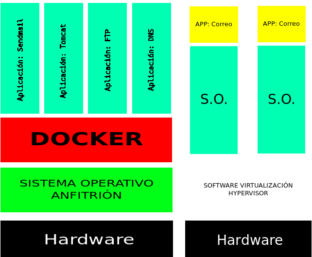

Docker es un subsistema de virtualización que comparte con el anfitrión el kernel y el sistema de archivos. el anfitrión siempre es un sistema linux. Si estamos en Windows o MAC, necesitaré una máquina virtual Windows virtualizada con virtualbox o similar.
Un software de máquinas virtuales necesita instalar el sistema operativo completo. Ejemplos de sistemas de virtualización:
Un software de contenedores es un sistema de virtualización que comparte el kernel con el anfitrión. Se basa en el concepto de microservicio, donde tengo todos los programas instalados, configurados y funcionando, gracias a los contenedores. Ejemplo de sofware de contenedores:

Para saber más sobre el tema:
Un Dockerfile es una receta para crear una imagen para una aplicación particular de Docker. De ese modo podemos tomar una imagen base, instalarle programas, configurar esos programas y dejarla preparada para crear contenedores a partir de ella.